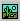
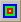
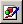

To customize printed reports in ELTM (Exterior Lighting Test Module), use the ELTM Designer window to create a template file or edit an existing one.
The ELTM Designer window has two panels: the control panel on the left, and the design panel on the right. The buttons on the control panel contain the tools you need to create a design. Select a button, and then click the area on the design panel where you want to insert the control.
You can view the Properties dialog box for a control on the design panel, and make changes. Right-click the control, and select Properties from the pop-up menu.
| Control Panel Buttons | Inserts a control in the ELTM Designer window: |
|  | Inserts a logo image. |
|  | Inserts an image of the Display Viewer. The first insert is a default image. When you do a print or print preview, the Display Viewer image from the currently run ELTM is displayed. This control can be re-sized. |
|  | Inserts an icon image. |
| Inserts a text box. | |
| Inserts data. | |
| Inserts a data grid. The grid displays data only after an ELTM run. The actual values do not appear in the Designer window. To preview the printout, do a Print Preview. | |
| Save As | Saves the template to a new file. Enter the file name in the dialog box |
| Save | Saves the template to an existing file. The default file is DefaultELTM.prx, which is located in the \bin folder of your ASAP installation. |
| OK | Exits the dialog; you are prompted to save any changes. |